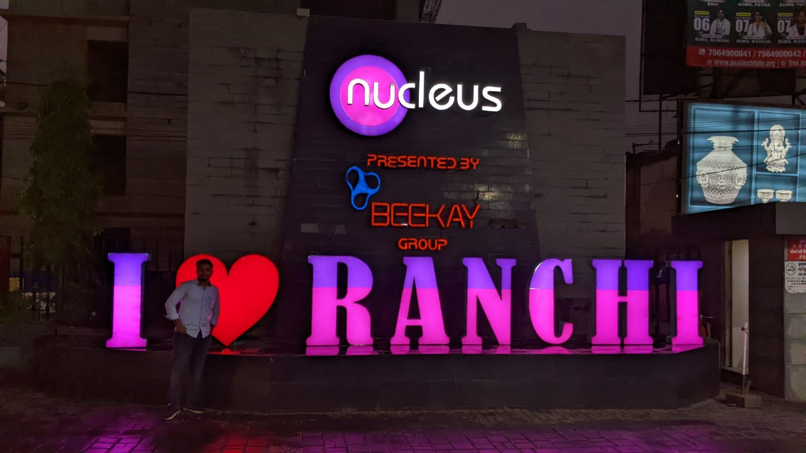
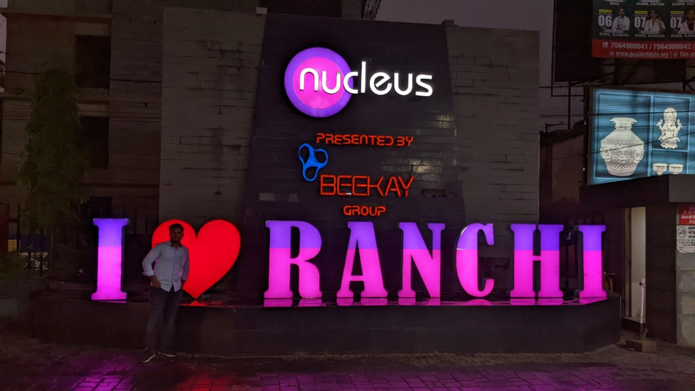

After a long wait of almost one month we recieved a notice from the college that we will be coming to the campus from 29th of April.People were excited. Whatsapp was full of screenshot put on status. People were expressing joys in many ways. Some were too excited that they were counting days until the D-Day i.e the arrival 😂😂
As the date approached, people started arriving in Ranchi. Snaps and stories flooded with the pictures of the Ranchi junction and college.It kind of felt exciting and nervous all together. But whatever it was we all were happy to meet each other. Seeing those tiny video screens as people.People along with whom we will be spending these unforgettable 4 years.
Let me give you the feel of our first day at the hostel.Our morning started with all of us reshuffeling our rooms for our friends to be our flatmates.We definetly wanted to make new friends but also wanted the old ones whom we have interacted to be with us. After all the reshuffleing and all, we thought of bringing all the members of our group together and order pizza to enjoy and get to know each other. It was a nice day and we had fun. Night was spent listening to music. 🎶🎶
Orientation was organized. People were dressing like it was there own wedding thinking of making first expression as the best one on some special people. If you know you know 😂😂 In the Orientation- We were told about rules and regulations of the college and were introduced with different societies of the college. We also got to know about the esteemed faculty of our college. We also had a small interaction with some of seniors that were present there. They interaction went perfectly.
Let's talk about the first day of class. We got ready , had breakfast and went to class. We were told about the assignment we will be submitting and test we will be giving through out the semester. Since it was the first class, we were just introdcued to the faculty and each other. It was overall a really tiring day. Probably,I should also add that one month has passed and mid sems are on the way and we still haven't got the said assignment.😁😁
Instead of boring you all with academics let's talk about Ranchi as a city full of life. Coming from the Delhi NCR region,we were not habitual to this good weather and greenerey. We are adapted to the scroaching heat and hot winds of Delhi while here it was different. The mornings are peaceful and cool. As the sun goes up the tempreture rises but soon it rains keeping the average tempreture around 30°C which makes the weather here absolutely wonderful. Moreover the city Ranchi is full of greenerey and all. We could safely say that its a nice place to spend your college life.
Now coming to the best parts of this one month Whether it be our trips to the sadabahar chock in the evenings for having snacks and rolls to the late night UNO games everything here seems nice. Life here in hostel is full of excitement and unexpected things each day So as soon as electricity goes out,People use that opportunity for the betterment of the hostel life:- Scaring people off during nights or Manu singing and entertaining us or dancing on the music or just sitting ideally and talking, Everthing has its own level of excitement.
 

Exploring Ranchi has also been fun- For the starters,We went to watch Dr. Strange and the Multiverse of Madness whose tickets were booked even before we arrived here.Being the first trip to the nucleus mall we were kind of excited. Moreover a group of 13 close friends made it even more fun. The day though started out great but it ended with me(Yash) getting ill. The movie was nice though . The rock garden trip had its own perks. Then the next week we again went to nucleus for bowling and then went to the Rock Garden with a few people from JUPMI campus. Oh shit! I forgot to mention that, the girls were staying at the jupmi campus and so we had almost 0 interaction with them which made it feel like a boys' college What made it more memorable was the bad weather. Rock garden being situated at the top , experieced a strong gush of winds and very heavy rainfall due to which we had to stop for a while. As we arrived at the rock garden the weather seemed to changing its couse all of a sudden During the return , we ate momos which kind of was something i was missing on coming to ranchi and this time the momos were worth it. Although the building we took shade from during the rain had all its glasses broken which was kind of dangerous but we definetly enjoyed getting wet in rain and clicking beautiful photos.So that is all for the one month of college. With mid sems approching i could say that it will definetly show the academic side of the college life properly. Let's hope we get through it properly.